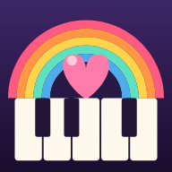

사랑나라 테스트를
도와주세요
아이와 함께 듣고 치는 피아노 동요 앱이에요
안드로이드 — 앱으로 설치해요
테스터 신청하러 가기눌러도 아무 일이 없으면 이 화면을 크롬으로 열어 주세요
- 위 버튼을 누르면 열리는 화면에서 「테스터 되기(Become a tester)」
- 그 아래 뜨는 「Google Play에서 다운로드」 로 설치
⚠️ 제게 알려주신 지메일 계정으로 로그인된 폰에서 열어 주세요. 다른 계정으로 열면 “테스터가 아닙니다” 라고 떠요.
🙏 부탁이 두 가지 있어요
- 14일 동안 앱을 지우지만 말아 주세요. 이건 꼭 부탁드려요 🙇
- 그동안 시간 나실 때 한두 번만 열어서 체험해 주시면 정말 감사하겠습니다. 한 곡만 쳐 보셔도 돼요.
지난번엔 “안 쓰셔도 된다”고 말씀드렸는데, 구글이 실제로 열어 본 기록까지
보더라고요. 그것 때문에 심사에서 한 번 반려됐어요 🥲
혹시 이상하거나 불편한 점이 있으면 한 줄이라도
sya.apps.dev@gmail.com
으로 보내주시면 큰 도움이 돼요.
아이폰 — 웹으로 즐겨요
아이폰용 앱은 아직 준비 중이라, 사파리에서 열면 앱처럼 쓸 수 있어요. (아이폰은 구글 테스트 집계에는 안 잡혀서, 편하게 즐겨만 주셔도 돼요.)
사랑나라 열기📌 지금 카카오톡 안에서 보고 계세요. 여기서는 홈 화면에 추가가 안 돼요.
오른쪽 아래 ⋯ 를 누르고 Safari로 열기 를 고른 뒤 아래 순서대로 해 주세요.
홈 화면에 아이콘 만들기
- 위 「사랑나라 열기」 를 눌러요
- 사파리 아래쪽 공유 버튼 ⬆️ 을 눌러요
- 목록을 내려서 「홈 화면에 추가」 를 눌러요
그러면 앱처럼 아이콘이 생기고, 전체 화면으로 열려요.
사랑나라는 어떤 개인정보도 수집하지 않아요.
개인정보처리방침 보기